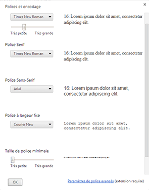
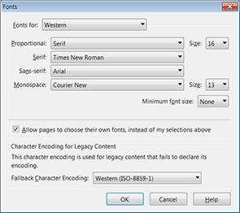
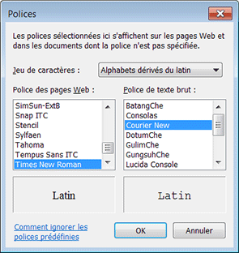
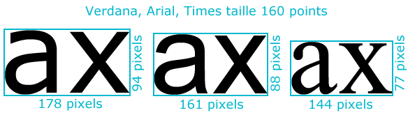

Si aucune indication n'est donnée sur la police de caractères et la
taille à utiliser, les textes sont affichés avec les éléments de la
configuration du navigateur.
Par défaut, la police sera généralement "Times new roman" pour la
famille serif et "Arial" pour la famille sans-serif. La taille par
défaut est quant à elle définie à 16 pixels.
Pour que la police choisie par l'auteur soit utilisée par le
navigateur, il faut que cette police soit
installée sur l'ordinateur du navigateur. Si ça n'est pas le cas,
le navigateur utilisera la police par défaut de sa configuration.
Il faut aussi que l'utilisateur n'ait pas précisé dans la
configuration que ses propres choix sont prioritaires sur ceux de
l'auteur des pages HTML.

Configuration police dans Chrome

Configuration police dans Firefox

Configuration police dans Internet
Explorer
La propriété font-family
Le choix d'une police de caractères pour afficher un texte se fait
avec la propriété font-family
dont la valeur est le nom d'une police.
body {
font-family: Verdana;
}
Si le nom de la police est un nom composé qui contient des espaces,
le nom doit être entouré avec des guillemets.
body {
font-family: "Lucida Grande";
}
La casse n'a pas d'importance dans le nom des polices.
fontfamily.io donne des informations sur la présence
de telle ou telle police sur tel ou tel OS.
Liste de polices
Pour avoir plus de chance que la police spécifiée soit présente sur
l'ordinateur du navigateur, on précise généralement
plusieurs polices de caractères avec la propriété font-family.
.
Les noms des polices doivent être séparés par une
virgule.
body {
font-family: Verdana, "Bitstream Vera Sans", "DejaVu Sans",
"Lucida Sans", "Lucida Grande", sans-serif;
}
La déclaration sera interprétée par le
navigateur de la façon suivante : si la police Verdana est sur le
système il l'utilise, sinon si "Bitstream Vera Sans" est sur le
système il l'utilise, sinon etc. Finalement si aucune des polices
n'est installée, il utilisera la police sans-serif par défaut de sa
configuration.
Terminez toujours votre liste avec l'un des
mot-clés suivants selon la famille de polices que vous définissez :
serif pour une famille de polices avec
empattement,
sans-serif pour une famille de polices sans
empattement,
monospace pour une famille de polices à
espacement fixe,
cursive pour une famille de polices cursive ou
script,
fantasy pour une famille de polices
décoratives.
Ratio d'aspect
Suivant la police utilisée, et à taille égale, un texte n'aura
pas le même encombrement (espace occupé). C'est parce que toutes les
polices n'ont pas le même ratio d'aspect (facteur de forme, rapport
de forme ou rapport d'aspect). Certaines polices, et spécialement
celles conçue pour l'affichage écran, sont plus larges et plus
hautes que d'autres.

Différences de rapport d'aspect
Quand on définit la liste des polices pour une font-family
il faut mieux utiliser des polices qui ont un ratio d'aspect
identique ou approchant pour que le passage éventuel d'une police à
une autre par le navigateur n'ait pas d'effets trop visibles.
On peut faire par exemple les associations suivantes.
Il ne faut jamais baser une mise en page
sur le rendu visuel obtenu ponctuellement lors de la création de la
page, et surtout ne jamais forcer des sauts de ligne pour " faire
tenir" un texte dans un espace prédéfini. Si le navigateur passe
d'une police à une autre, vous risqueriez d'avoir un texte mal
affiché.
Propriété héritée
La propriété font-family
est héritée : elles est transmise automatiquement de l'élément
parent à ses enfants, quelque soit le niveau de descendance.
On peut donc facilement gérer la police principale d'une page en
mettant la propriété font-family
sur l'élément body,
ou sur l'élément html.